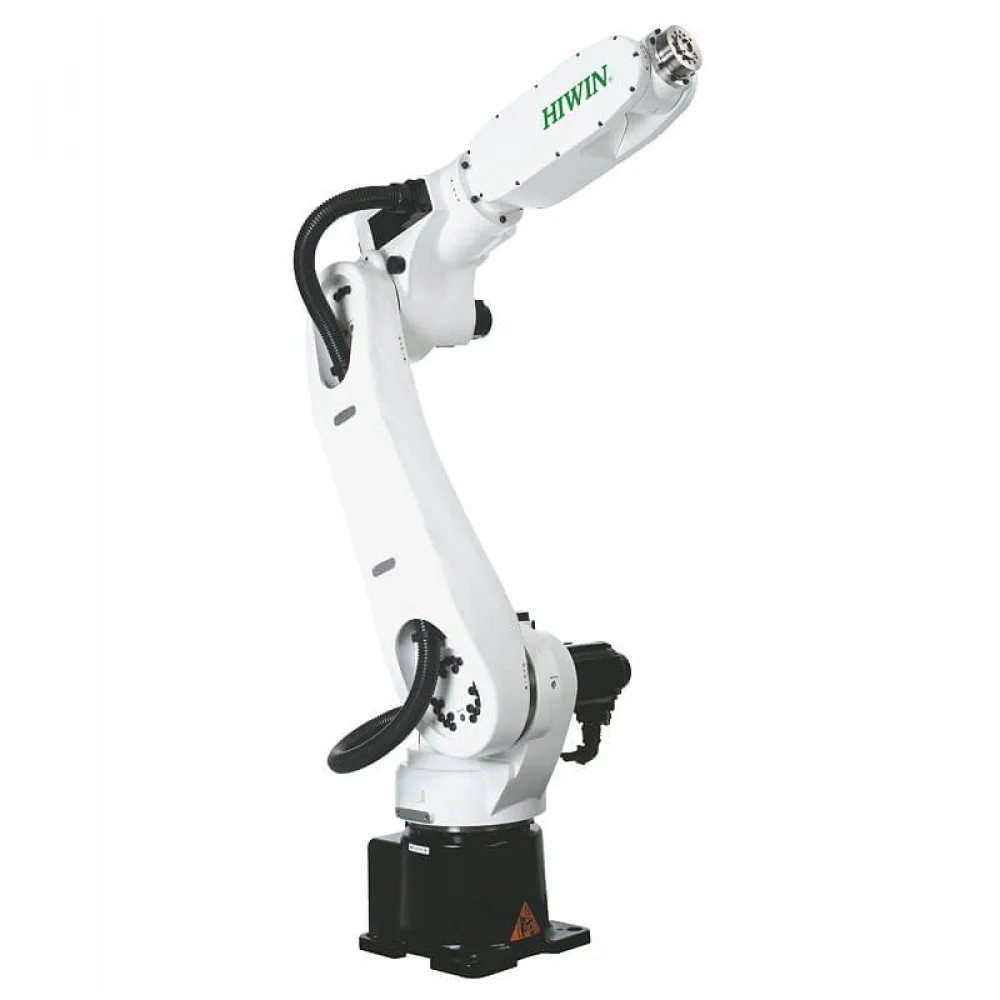
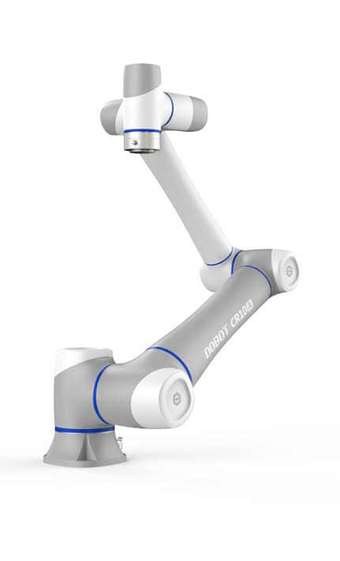
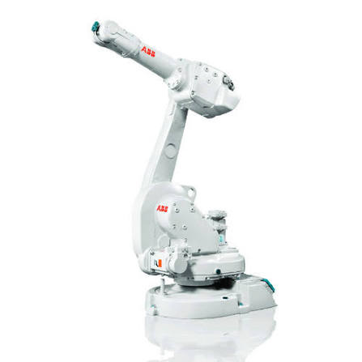
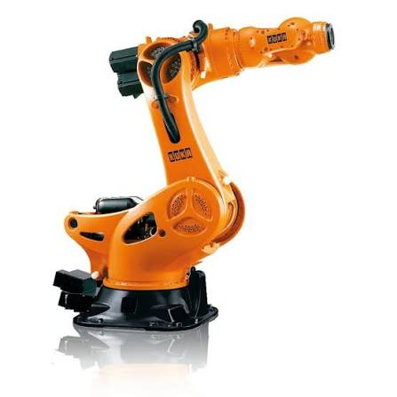
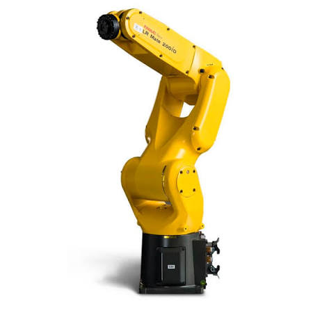

O robô articulado é um tipo de robô industrial que possui múltiplos graus de liberdade, permitindo movimentos complexos em três dimensões. Sua estrutura composta por articulações permite uma ampla gama de movimentos, sendo amplamente utilizado em aplicações que exigem flexibilidade e precisão em ambientes industriais. embalagem e automação de linhas de produção.


O robô articulado é um dos modelos mais versáteis e utilizados na automação industrial. Sua estrutura é composta por múltiplas articulações rotativas, geralmente seis ou mais, que reproduzem os movimentos de um braço humano, proporcionando ampla liberdade de movimento, alta precisão e excelente repetibilidade. Graças ao controle independente de cada eixo por motores e sistemas eletrônicos, esse robô é capaz de executar tarefas complexas em diferentes posições e orientações, sendo amplamente empregado em processos como soldagem, montagem, pintura, usinagem, manipulação de materiais, paletização e inspeção de qualidade. Além de oferecer grande capacidade de carga e alcance operacional, o robô articulado pode ser integrado a sensores inteligentes, sistemas de visão computacional e tecnologias da Indústria 4.0, permitindo monitoramento em tempo real, manutenção preditiva e maior eficiência nas linhas de produção automatizadas.
Empresas líderes no setor desenvolvem robôs articulados para aplicações industriais, oferecendo soluções com alta precisão, flexibilidade e desempenho em diversos segmentos da automação.

Líder global em automação industrial, a ABB fabrica robôs articulados utilizados em soldagem, montagem, pintura, paletização e movimentação de materiais.

Empresa alemã reconhecida por seus robôs articulados de alta precisão, amplamente empregados nas indústrias automotiva, metalúrgica e de manufatura avançada.

Fabricante japonesa referência em robótica industrial, desenvolvendo robôs articulados com alta velocidade, repetibilidade e confiabilidade para diferentes aplicações.